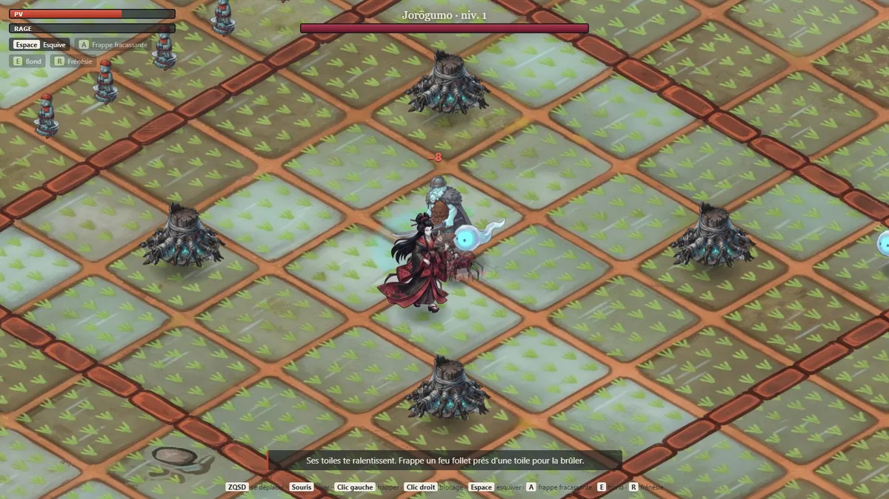
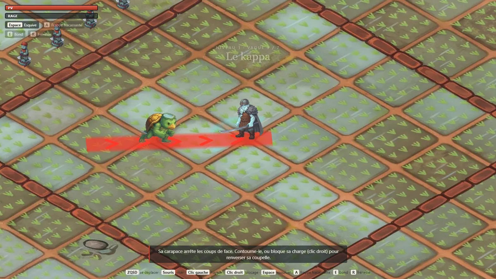
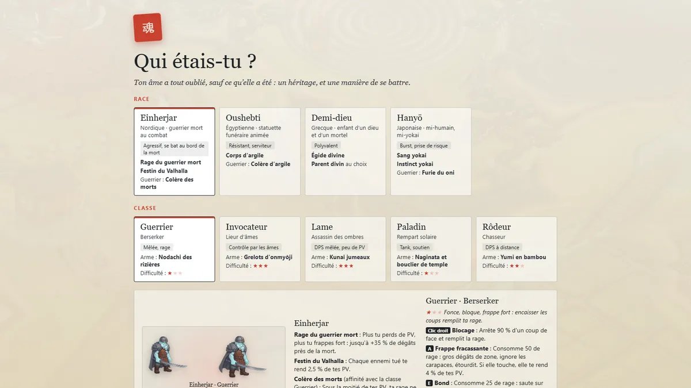
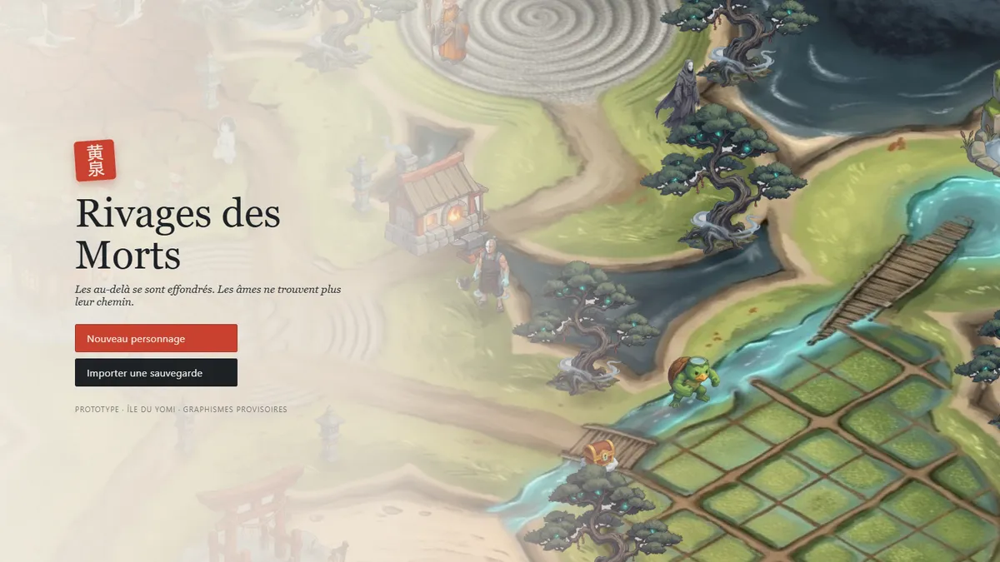

Développeur full-stack · jeu vidéo · Lyon
Meven Hoarau Techer
Je conçois seul Rivages des Morts, un action-RPG jouable dans le navigateur en Babylon.js, avec coop en ligne à trois. Derrière, un socle back-end éprouvé : deux stages et six fonctionnalités livrées sur un projet open source en production.
En recherche d'alternance — studios de jeu indépendants, Lyon ou télétravail. Disponible dès maintenant.

Rivages des Morts en développement
Les au-delà de toutes les mythologies se sont effondrés et forment un archipel. On incarne une âme échouée sur l'île du Yomi, l'au-delà japonais, et on affronte ses yokai au corps à corps. Un action-RPG de donjon en vue isométrique, inspiré de Waven et de Hades, dont je porte le game design, l'univers et le développement.
Jouer (nouvel onglet) Code source (nouvel onglet) Game design document (nouvel onglet)



Ce qui est jouable
- Une île avec PNJ, quêtes, forge et boutiques.
- Un donjon de six vagues de yokai, puis la Jorōgumo, boss en trois phases.
- Équipement, arbre de compétences, butin conservé après la mort.
- Coop en ligne jusqu'à trois joueurs, sans compte ni serveur.
Mes choix de conception
- Une règle d'univers qui fait du gameplay : « on existe tant qu'on se souvient de nous » explique l'effondrement, donne les Oubliés comme ennemis et fixe la rareté des reliques.
- Couper ce qui déséquilibre : la seconde vie du Demi-dieu écrasait les autres races, je l'ai remplacée par une invulnérabilité courte.
- Le ressenti de l'invité en coop : le combat tourne chez l'hôte, mais le héros de l'invité répond tout de suite à ses déplacements.
Comment je le fabrique
Je développe avec Claude Code comme assistant de programmation. Le game design, l'univers, l'équilibrage et le choix de ce qui entre dans le jeu restent les miens, et chaque changement passe par une pull request que je teste en jouant avant de la fusionner. Les graphismes actuels sont provisoires : générés par IA (Google AI Studio), puis détourés et intégrés par mes propres scripts Node.js.
TypeScript · Babylon.js · Vite · WebRTC (Trystero) · Node.js · GitHub Actions
Autres projets
-
Skill Claude Code : Cahier des charges
Transforme des notes en vrac en cahier des charges structuré, vérifié et exporté en PDF, en ne posant que les questions auxquelles les notes ne répondent pas. Il n'invente rien : ce qui manque reste marqué.
-
TiBillet / Lespass
Six fonctionnalités livrées sur une billetterie libre réellement utilisée : filtres de recherche, champs d'événement configurables, affichages conditionnels. La preuve que je sais entrer dans une vraie base de code et livrer pour de vrais utilisateurs.
-
Site WordPress d'une école de cuisine
Site pour une école de cuisine qui accueille des personnes en situation de handicap, développé avec LocalWP puis installé sur un serveur Ubuntu dédié, en échange direct avec le client.
-
Tetris
Mon tout premier programme, et déjà un jeu : Tetris complet en Python, appris seul. Rotations et collisions, menu, meilleur score sauvegardé.
Aussi : (dossier de conception UML, Merise et PostgreSQL), et .
Parcours
Je mets mon regard de joueur au service de l'expérience : je ne code pas seulement des fonctionnalités, je pense à ce que ressent la personne qui joue.
Je suis en Bachelor 3 Développement Web à Nexa Digital School, à Lyon, après un BTS SIO option SLAM obtenu à La Réunion. Mon socle, c'est le back-end appris sur des projets réels ; mon moteur, c'est le jeu.
Mon parcours est atypique : de La Réunion à Lyon, en passant par un échange Erasmus à Heidenheim, en Allemagne, en février 2025, où j'ai réalisé un site pour une école de cuisine inclusive.
Ce que j'apporte : mener un projet de A à Z, trancher et proposer, porter un regard critique sur mon propre travail, et juger une interface ou un combat à ce qu'on éprouve, pas seulement aux métriques.
Compétences
- Front, 3D web & jeu
- JavaScript, TypeScript, HTML/CSS, Babylon.js, Vite, WebRTC, Pygame, game design
- Back-end
- Python, Django, Java, SQL (PostgreSQL, SQLite), UML et Merise
- Outils
- Docker, Git et GitHub, GitHub Actions, Linux, WordPress, Claude Code
- Langues
- Français natif, anglais C1 (18,5/20 au BTS), allemand B1
Expériences et formation
- 2026 →Bachelor 3 Développement Web Nexa Digital School, Lyon
- Janv.–févr. 2026Stage développeur — Komidi TiBillet : six fonctionnalités livrées en production
- Juin 2025Stage développeur web — EURL EPP Refonte complète du site, mise en ligne
- Févr. 2025Erasmus — Heidenheim, Allemagne Site WordPress pour une école de cuisine inclusive
- 2024–2026BTS SIO option SLAM Admis, 13,75/20, dont 18/20 en conception et développement d'applications
- 2023–2024Apprenti en pharmacie Première expérience de l'entreprise
- 2023Bac ST2S Mention assez bien
- EnsuiteMaster orienté jeu vidéo Si j'y parviens, pour me spécialiser
Je tiens aussi une veille mensuelle sur l'IA et le développement depuis septembre 2024.
Documents
En recherche d'alternance
Studios de jeu indépendants, à Lyon ou en télétravail — ou, à défaut, une startup du créatif et du web interactif. Rythme Nexa, disponible dès maintenant. Vous faites un jeu et cherchez un développeur qui pense aussi au joueur ? Écrivez-moi.
- E-mailmeventecher@gmail.com
- Téléphone+262 693 827 100
- GitHubAoiShidaStr (nouvel onglet)
- LinkedInmeven-hoarau-techer (nouvel onglet)